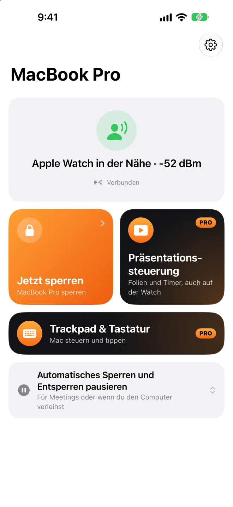

Du gehst – gesperrt.Du kommst – entsperrt.
Eine App in der Mac-Menüleiste, die auf das Bluetooth-Signal von deinem iPhone oder deiner Apple Watch achtet.Keine App auf Telefon oder Uhr nötig.
Die Mac-App ist kostenlos und Open Source. Erfordert macOS 26 oder neuer.
und er entsperrt Geh so weit,
und er sperrt
Apple Watch in der Nähe−52 dBm
Ziehe Du nach rechts und geh wieder zurück.
Lieber spät entsperrt als falsch gesperrt.
- Du tippst noch? Kurz warten
- Gesperrt
- Apple Watch zuerst
- iPhone bestätigt dich
- Erst dann das Passwort
Sperrt, wenn es soll. Hält sich raus, wenn nicht.
Keine Sperre beim Vortrag
Während Keynote oder PowerPoint läuft.
Entspannt zu Hause
Vertrautes WLAN, am Strom oder feste Zeiten.
Kurz pausieren
15 Min. bis 4 Std.; sperrt danach sofort.
Merkt fremdes Entsperren
Protokolliert, macht ein Foto, warnt dein iPhone.
Wie lange du heute sitzt
Erinnert ans Aufstehen, wenn du zu lange sitzt.
Umstieg von BLEUnlock
Geräte und Schwellen mit einem Klick übernehmen.


Dein iPhone ist dein Presenter.
Keine Fernbedienung nötig.
Wähle ein Werkzeug, halte das Touchfeld gedrückt und bewege den Finger.
Geht auch gesperrt
Tasten auf Sperrbildschirm und Dynamic Island.
Auch per Apple Watch
Tippen, Crown drehen oder Doppeltippen.
Vortragstimer
Tippen am Handgelenk bei 5 Min. und am Ende.
Mac-Lautstärke
Keine Lautstärkeanzeige auf der Leinwand.
Dein iPhone ist auch Trackpad und Tastatur für den Mac.
Tippen mit der iPhone-Tastatur.
- Bewegen
- Linksklick
- Rechtsklick
- Scrollen
- Ziehen
- Wechseln
Im Touchfeld ziehen oder tippen, oder im Textfeld schreiben.
Sperren ist gratis. Presenter und Trackpad sind Pro.
Mac-App
Open Source · Auto-Updates
- Sperrt beim Gehen, entsperrt beim Zurückkommen
- Keine Sperre beim Präsentieren oder zu Hause
- Verlauf und Zeit am Platz
Presence Remote
iPhone · Apple Watch
- Mit einem Tippen sperren und pausieren
- Mitteilung beim Sperren oder Entsperren
- Verschlüsselte Prüfung vor dem Entsperren
Presence Pro
- PräsentationssteuerungiPhone · Apple Watch
- Trackpad & TastaturiPhone
Abos 7 Tage kostenlos testen · Familienfreigabe
Upgrade in der AppDein Mac hört nur auf dein iPhone.
- Kein Account, kein Server
- Jeder Befehl ist verschlüsselt
- Passwort bleibt im Schlüsselbund
- Open Source
Fragen
Muss ich eine App auf dem iPhone installieren?
Nein, die Mac-App allein sperrt und entsperrt automatisch. Presence Remote ergänzt Fernsperre, Mitteilungen und die Prüfung vor dem Entsperren; Presence Pro bringt Präsentationssteuerung sowie Trackpad & Tastatur dazu.
Was brauche ich?
Mac: macOS 26 oder neuer. Presence Remote: iOS 26 bzw. watchOS 26 oder neuer. Es geht auch nur mit einer Apple Watch oder einem anderen Bluetooth-Gerät mit fester Adresse.
Was ist der Unterschied zu „Mit Apple Watch entsperren“?
Die integrierte Funktion entsperrt nur, sperrt aber nicht. Presence macht beides und lässt der Uhr beim Entsperren den Vortritt. Beides funktioniert zusammen.
Wird mein Mac gesperrt, obwohl ich davorsitze?
Das Signal muss mehrere Sekunden schwach bleiben, und während du tippst, wird gewartet. Ist es zu empfindlich, kalibriere unter „Geräte“ neu.
Warum gibt es die Mac-App nicht im Mac App Store?
Automatisches Entsperren simuliert die Passworteingabe, was Apps im Mac App Store nicht dürfen. Die Mac-App ist von Apple notarisiert und aktualisiert sich selbst.
Welche Präsentations-Apps funktionieren?
Zum Blättern werden Pfeiltasten gesendet, die jede Präsentations-App versteht; Laser und Spotlight liegen auf der obersten Ebene. Aktiviere zuerst in Presence auf dem Mac „Präsentationssteuerung erlauben“.
Wie aktiviere ich Trackpad & Tastatur?
Aktiviere in Presence auf dem Mac „iPhone & Watch › iPhone-Steuerung erlauben“ (standardmäßig aus). Ist der Mac gesperrt, nimmt er keine Eingaben an, und Getipptes wird nicht gespeichert.
Belastet das den Akku?
Die Signale werden ohnehin gesendet; Presence hört auf dem Mac nur mit. Die CPU-Last auf dem Mac liegt meist unter 1 %.